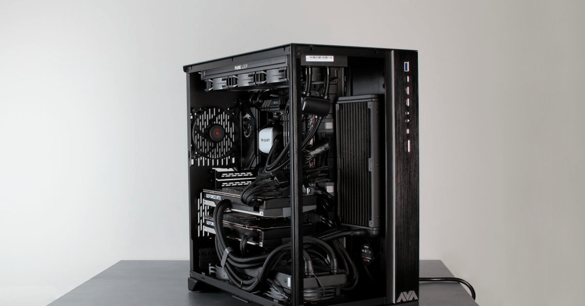

Workstation PC

- Purpose-Built for Professionals
- Ideal for video editing, 3D modeling, coding, and virtualization
- Focus on stability and high multi-core processing power
- Recommended Components
- CPU: Intel i9/Xeon or AMD Ryzen 9/Threadripper
- 32GB+ ECC or non-ECC RAM
- Workstation-grade GPU (e.g., NVIDIA Quadro, AMD Radeon Pro)
- 1TB+ SSD with RAID support
- Quiet cooling for long runtime stability
- Features and Benefits
- Certified hardware for pro software (AutoCAD, Premiere Pro)
- Multiple PCIe slots and expansion support
- Long-term reliability and future-proofing
Gaming PC

- Optimized for Entertainment and Performance
- Built for high-FPS gaming, streaming, and VR
- Prioritizes GPU power, RAM speed, and cooling
- Recommended Components
- CPU: Intel i5/i7 or AMD Ryzen 5/7
- GPU: NVIDIA RTX 4060+ or AMD RX 7800+
- 16GB–32GB fast DDR4/DDR5 RAM
- 500GB–1TB NVMe SSD for fast game loading
- Stylish case with RGB and airflow focus
- Features and Benefits
- Supports high refresh rates and resolutions (144Hz/4K)
- Custom RGB lighting, tempered glass cases
- Overclocking and real-time performance monitoring